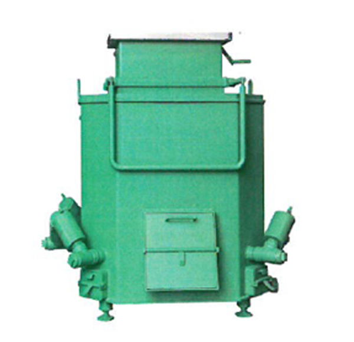
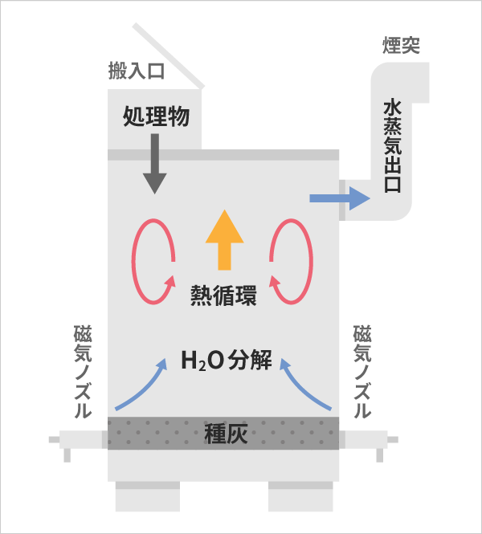

ecology
環境再生への取り組み
熱磁気分解装置のご紹介

特長
- 電気を使わない
- 燃料を使わない
- メンテナンス不要
- 24時間稼働が可能
- 有機物であれば分解できます

熱磁気分解の仕組み
外気を遮断した分解室内の温度が温まり、排気移動により減圧状態となります。
この減圧状態において一定の温度以下で装置内に外部から空気が流入します。
マイナスイオンが分解機内に投入された有機物の炭素（C）分子と反応し、接触面で激しい熱分解反応が起こり、燃料（重油や電気）がなくても熱源を持続させ、有機物を酸化分解します。燃やす処理をしていません。
二酸化炭素（CO2）やダイオキシン等を含む排気ガスはリアクターで処理し、環境基準値内で排出されます。
処理できるもの
- 生活ゴミ
- 紙おむつ等の難燃物
- ゴム製品
- 木材
- プラスチック等の石油化学製品
- 動植物性残渣
- 農業廃棄物
- 工業廃棄物
- 漁網
有機物であれば、基本的にどんなものでも処理可能ですが、処理物によっては同じ処理物だけの投入より、一定の割合での混合投入が、より良い処理状態を作ります。専門オペレーターを決定していただき、事前に3日程度の実施指導をいたします。
| 容量（ℓ） | 24時間処理能力の目安（t） | 産業廃棄物を焼却する場合（火格子面積2m2、200kg/h以下） |
|---|---|---|
| 300 | 1～1.5 | ○ |
| 500 | 1.5～2 | ○ |
| 1,000 | 2～4 | ○ |
| 3,000 | 6～12 | |
| 5,000 | 10～20 |